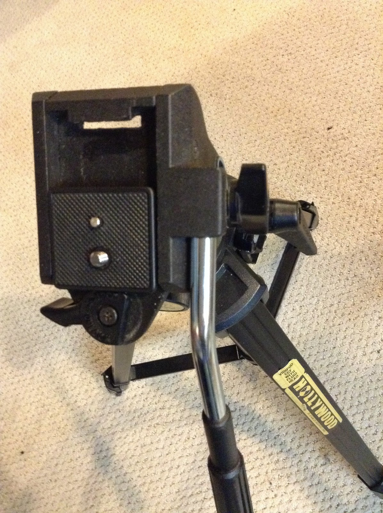

BackBlog - Teleporter video
We through a Star Trek themed surprise party for my wife and I thought it would be fun to see if I could make a transporter effect.

To start we took two pictures, one with everyone in an away team formation and one with just the background

I then wrote …
read moreBug bots

I like the simple fun of brushbots; little robots, typically made with toothbrush heads, that use a cell phone vibrating motor to scoot around a table (you can buy kits here: http://www.makershed.com/products/brushbots). I decided that this would be a great project for me to do …
read moreCoffee table drawer


The kids have really done a number on our living room coffee table. The top has been "distressed" by biting, thrown toys and lots of drumming.

The drawers have also been used as steps to get up on top of the table. Most of the hardware components have broken under …
read moreGears with logos

Milk Jug Bird Feeder

My eldest daughter wanted to make a birdhouse/feeder. It was the middle of winter and I think she was thinking of building it out of wood. However, I realized what she really wanted to do was decorate it using some extra stickers she had. So, we compromised and I …
read moreDiet Coke and Mentos

As any true geek dad, I have always wanted to do the Diet Coke and mentos experiment. However it is messy and the logistics of getting the mentos in the coke without getting crazy sticky is challenging. I did a quick search of thingiverse and found a couple of wonderful …
read moreTripod Quick release mount
I got a tripod for my birthday this year. It is a really nice one, but I lost the quick release mount. Here is a picture with a quick release mount from another tripod. Obviously, it doesn't fit:

After some shopping online this one looks fairly good, but possibly not …
read moreParty Piñata

I like to watch Curious George with my Kids. That little monkey is a bit of a maker. I really like the episodes where he tries to build things. In most cases he doesn't get his design right and has to debug and iterate on the design until he has …
read moreAnn Arbor Mini Maker Faire
A few weeks ago we caravanned a group of family and friends down to the Ann Arbor Mini Maker Faire.

It was everything I had hoped: there were plenty of robots, 3d manufacturing devices and other things to touch and play with. My oldest daughter (with help from her papa …
read moreGarden Fortress

I love the idea of gardening. Specifically vegetable gardens where we can grow, harvest and eat some of our food. I've had a few gardens before, but in our current house it is difficult to have one because our beautiful four legged neighbors (deer) like to snack in our yard …
read more